1
浴室換気扇交換にいくらかかる？
浴室換気扇の交換を業者へ依頼する際の工事費用は、標準工事＋追加工事から成ります。
- 標準工事
- 換気扇本体
+交換費用
+処分費
- 追加工事
- 他の部材の交換が必要、
現地で加工が必要など
※出張費、基本料など明細が分かれている業者もありますが、ここでは標準工事にて施工できる場合の工事総額の相場を表示しています。
標準工事費は換気扇のタイプや築年数によって大きく異なるので、
まずは自宅の換気扇がどのタイプなのかチェックしてみましょう！
2
自宅の換気扇のタイプを知ろう
集合住宅の場合
コンクリート造の集合住宅では、単独浴室換気扇のほか、排気ダクトの本数を減らすため、２部屋又は３部屋の換気を１本の排気ダクトで行う2室・3室換気扇と、天井内に設置して換気を行う中間ダクトファンが採用されていることが多くあります。
単独浴室換気扇
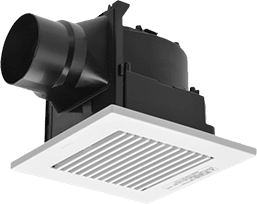 標準工事費の相場をチェック2室・3室換気扇
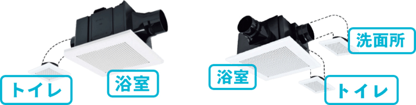 標準工事費の相場をチェック中間ダクトファン
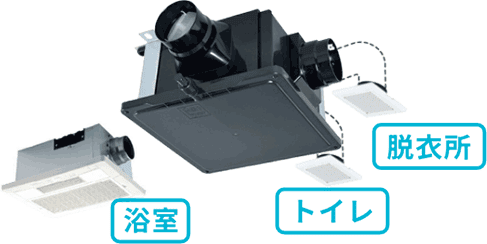 標準工事費の相場をチェック要注意ポイント
「浴室乾燥暖房機」は「浴室換気扇」ではありません。
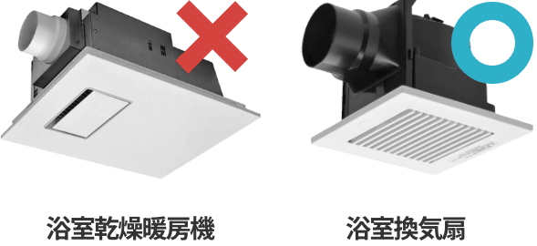
浴室乾燥暖房機は温風機能と換気機能を持つ機器です。
浴室換気扇は換気機能のみとなります。
3
換気扇タイプ別標準工事費
浴室単独換気扇の標準工事費
戸建て・集合住宅
24,200円～26,400円（税込）
後継品別交換費用例
-

FY-17C8
本体＋標準工事
24,200円
（税込） -

FY-24C8
本体＋標準工事
26,400円
（税込） -
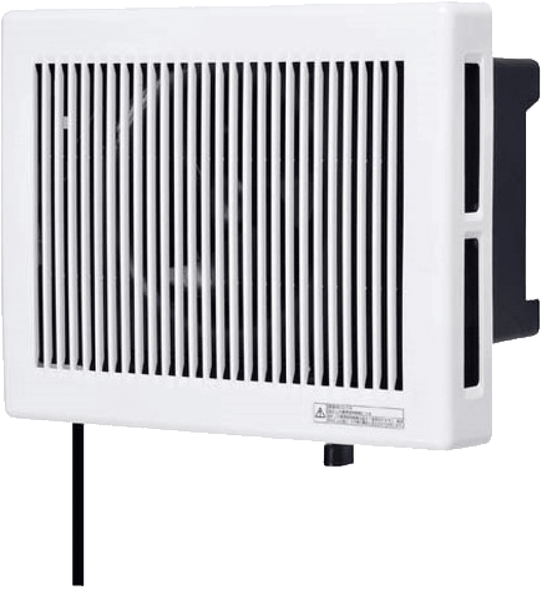
V-13BS7
本体＋標準工事
24,200円
（税込）
要注意ポイント
天井換気扇にも追加費用がかかるケースとかからないケースがあります。
追加費用がかかるケース
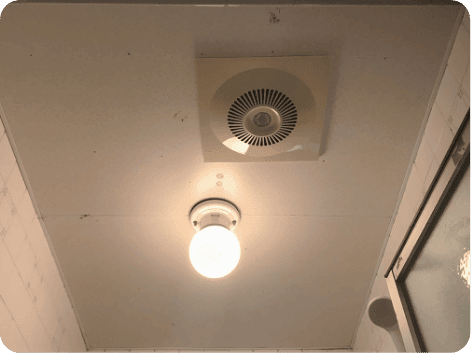
ユニットバスでない（在来浴室）で天井換気扇の場合は、点検口がないことが多いため、換気扇の取り外しに天井板加工などの追加費用がかかる場合があります。
追加費用がかからないケース
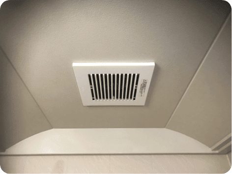
ユニットバスの場合は天井の換気扇が多く、電機系メーカー以外の換気扇が設置されていることもあります。換気扇サイズはどこのメーカーもほぼ同じなので、パナソニックや三菱の換気扇で安価に取替えできます。
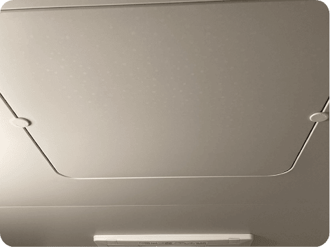
ユニットバスでこのような天井点検口があれば工事もシンプルなため追加工事はダクトの腐食による交換くらいしかありません。
２室・３室換気扇の標準工事費
集合住宅
２室換気扇
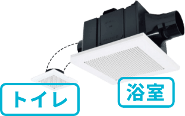27,500円～33,000円（税込）
３室換気扇
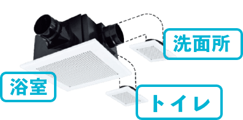36,300円～39,600円（税込）
後継品別交換費用例
-
２室換気扇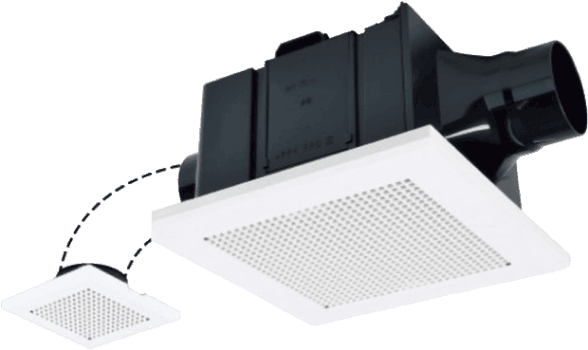
VD-13ZFC14
本体＋標準工事
27,500円
（税込） -
２室換気扇
VD-15ZFC14
本体＋標準工事
29,700円
（税込） -
３室換気扇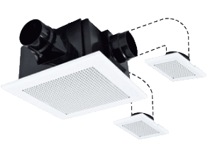
VD-15ZFFCL14
本体＋標準工事
36,300円
（税込）
中間ダクトファンの標準工事費
集合住宅
55,000円～（税込）
後継品別交換費用例
-
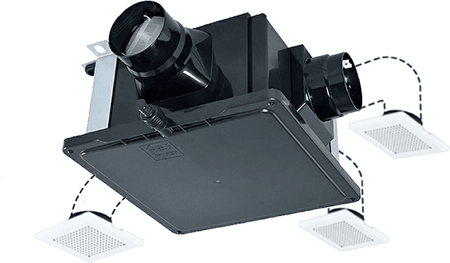
V-18ZMC6
本体＋標準工事
55,000円
（税込）
要注意ポイント
中間ダクトファン取替工事の見積りには基本的に現地調査が必要となります。
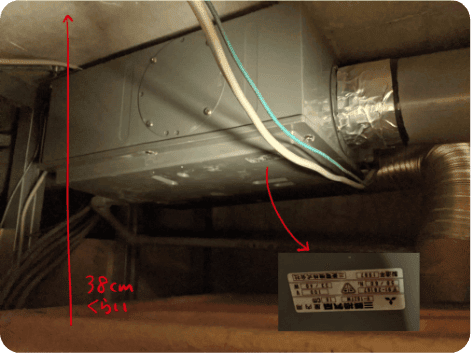
天井内に設置されている中間ダクトファンの取替工事は点検口からの作業となり、設置状況によりかなり難工事となる場合があります。 また、換気ダクトの切断やアンカーボルトの打設が必要となることもありますが、それでも住宅用の中間ダクトファンでしたら10万円を超える工事にはならないでしょう。
4
どんな時に追加工事が必要？
浴室換気扇の交換工事では、標準の工事では含まれていない工事が必要となることもあります。ここでは、主に3つのケースを紹介します。
case1
アルミダクトの劣化により交換が必要
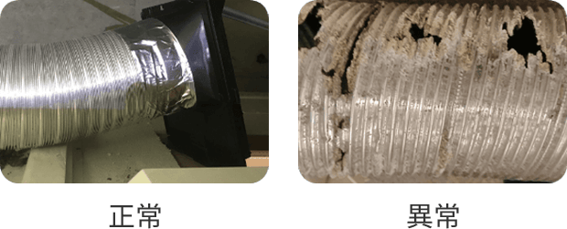浴室換気扇のアルミ製排気ダクトは湿気による腐食が進み、穴があいていることがあります。 アルミ製排気ダクトは施工性が良いため 換気扇付近のみ使用している場合が多く、約１ｍの交換となります。 （１ｍ以上は作業ができないため、取替えができないことがあります）
- アルミダクト取替費用1m
- 3,300円（税込）
case2
ガラリ（換気の出口）の詰まり除去
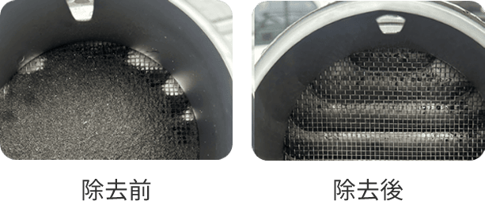浴室換気扇に限りませんが、換気扇本体、ダクト、ガラリ（出口）の全てでほこりが蓄積していきます。 換気扇本体は交換によりきれいなファンとなり、ほこりが溜まりやすいダクト（換気扇から１ｍ位がほこりがたまる）も換気扇交換時に掃除できますが、ガラリの詰まりは取り外して掃除をする必要があります。 画像のように詰まっていると、ほぼ換気はしていません。 集合住宅ではガラリが共用廊下やバルコニー側ではなく、妻側の高所に設置されていて、清掃ができないことがあります。
- ガラリの取り外し及び清掃作業追加費用
- 3,300円（税込）
case3
ボルト吊り設置のため取り外しが困難
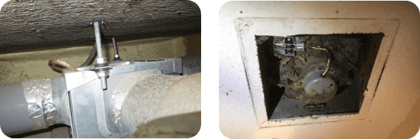戸建てではこのようなことはありませんが、築古集合住宅の浴室換気扇がボルト吊りにより設置されている場合があります。 ボルト吊り施工は先付け工事と呼ばれ、天井開口が小さく開けられており、天井開口の拡張工事も必要となります。浴室に天井点検口がない場合も多く、換気扇を破壊して取り出すなど、難工事になります。
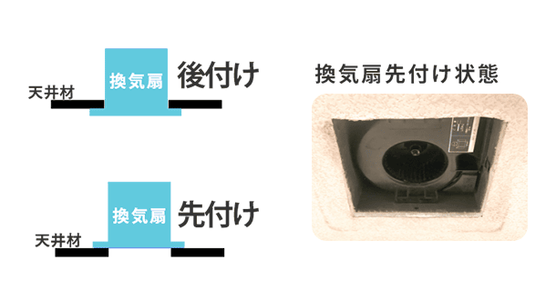- ボルト吊り施工及び天井開口拡張工事作業追加費用
- ~11,000円（税込）
5
どこに依頼したらいいの？
Answer
依頼するなら、
地元の電気工事業者一択です！
換気扇交換工事は地元の電気工事業者、街の電気店、一部のホームセンター及び家電量販店などがありますが、結局どこに頼んでも工事を行うのは地元の電気工事業者か街の電気店となるケースがほとんどです。
早さ・品質・価格が圧倒的◎
|
住宅から大型施設の電気工事を行う本物のプロ集団 |
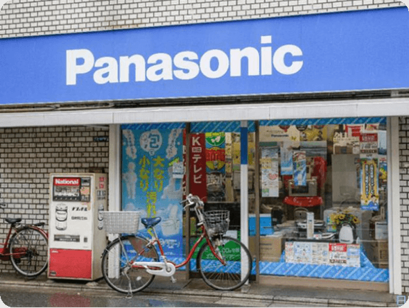
街の電気店。家電販売と小規模電気工事を行っている |
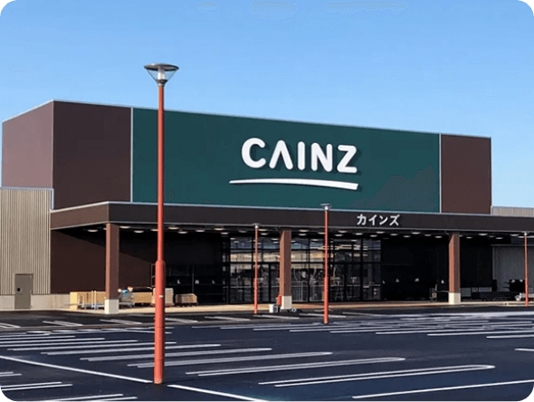
ホームセンターや家電量販店。細かい電気工事のみに対応している所は少ない |
|
|---|---|---|---|
| 早さ | 新築や改装工事のスピードについていくフットワークがあり迅速 | 速い | プロと直接相談をできないので、工事決定までに時間がかかり、工事の日時も遅くなる |
| 品質 | 精度と品質を常に求められる仕事をこなしているのでとても高い | 高い | 電気工事の知識がある人はあまりいないため話が通じにくい |
| 価格 | 適正価格 | 細かい料金表があるため高額請求されることはないが相場よりは高め。 出張費や見積り費用が発生する場合もある | 中間マージンが発生し品質の割に高額となる場合がある |
6
プロの電気工事業者の見分け方
ポイントは2つ！
- ①総額を適正価格で表示
- ②LINE・メールで写真を送るだけで見積もりに応じてくれる
①総額を適正価格で表示
浴室換気扇交換工事を適正価格で行う業者は、標準工事金額を総額で表示しており、追加工事の費用も記載されています。そうではない業者は常に現地調査を行い、見積りも高いことが多いです。
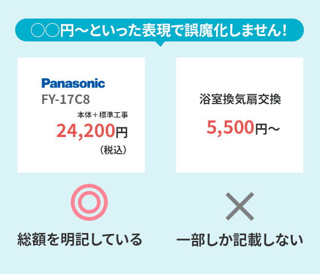②LINE・メールで写真を送るだけで見積もりに応じてくれる
換気工事に長けた業者なら、浴室換気扇の型番と設置状況の写真によりLINE・メールでカンタンに見積りができます。
無駄な現地調査をなるべく省くことで、良心的な価格でのサービス提供が実現できるのです。
要注意ポイント
プロの電気工事業者でも現地確認が必要となる場合もあります。
・中間ダクトファン
・築30年より古い建物